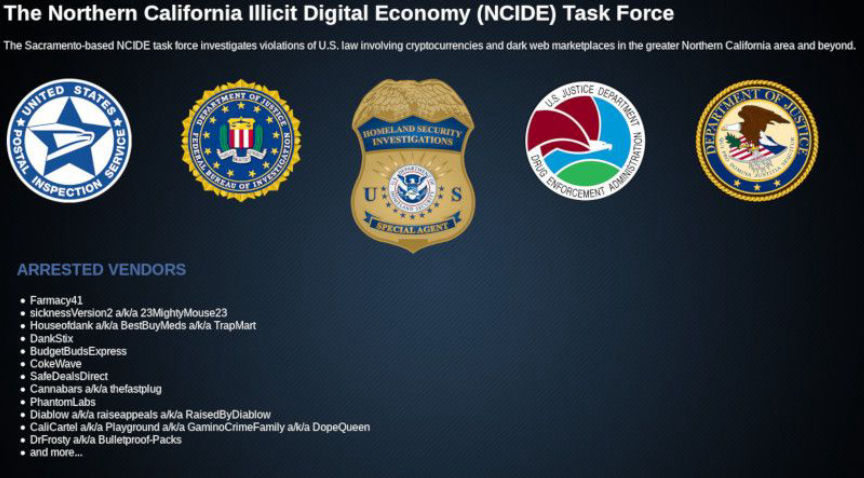

NCIDETF Adds Another Vendor to Their Arrested Vendor List
~2 min read | Published on 2019-08-30, tagged Arrested, Darkweb-Vendor using 338 words.
The Northern California Illicit Digital Economy (NCIDE) Task Force launched their own Tor site displaying a list of arrested and identified vendors. They recently added a Dream vendor to their list who had already lost his account to the Dutch National Police during Operation Bayonet.
In June 2019, the NCIDETF launched a hidden service with a list of arrested vendors. The public knew about the arrests of the majority of the vendors on the list. The first list included the following vendors:
Farmacy41 sicknessVersion2 a/k/a 23MightyMouse23 Houseofdank a/k/a BestBuyMeds a/k/a TrapMart DankStix BudgetBudsExpress CokeWave SafeDealsDirect Cannabars a/k/a thefastplug PhantomLabs Diablow a/k/a raiseappeals a/k/a RaisedByDiablow CaliCartel a/k/a Playground a/k/a GaminoCrimeFamily a/k/a DopeQueen DrFrosty a/k/a Bulletproof-Packs 
They then updated the site with a list of “Identified NorCal Vendors”
capebaldy HonestHerb Mr_Taffy
Since their update to the list in July 2019, they have added two new entries. One arrested vendor and one Identified NorCal Vendor. They listed guessguess as one of the arrested vendors and 420merchant as one of the NorCal Vendors they had identified.
The Guessguess case actually started years ago, even if the NCIDETF had not yet launched an investigation into the Dream Market vendor. After The FBI had shut down Alphabay and the Dutch National Police/Europol had shut down Hansa Market, Dutch law enforcement attempted to log into vendor accounts on Dream Market using the same usernames and passwords the target vendors had used on Hansa Market. This only worked a small number of times and only on vendor accounts without 2-FA enabled. The following list of 14 vendors had their Dream Market accounts “locked” by Dutch law enforcement:
00DRGREEN00 BoulderMedical cannab1z cocaMG dutchcandyshop DrPoseidon GlazzyEyez Gridlockdope guessguess ibulk iCoke MarcoPolo420 mushrooms wolfydutch
Dutch law enforcement logged into those vendor accounts on Dream Market and changed the PGP key to an official Dutch National Police key. Guessguess was one of the 14 vendors who used the same password on Dream Market that they had used on Hansa Market. At this point it is unclear if the NCIDETF used any of the information gathered by Dutch authorities during (and immediately after) Operation Bayonet.
Their onion service is accessible via the following address: ncidetf3j26mdtvf.onion
In June 2019, the NCIDETF launched a hidden service with a list of arrested vendors. The public knew about the arrests of the majority of the vendors on the list. The first list included the following vendors:
The NCIDETF Arrested Vendor List
They then updated the site with a list of “Identified NorCal Vendors”
Since their update to the list in July 2019, they have added two new entries. One arrested vendor and one Identified NorCal Vendor. They listed guessguess as one of the arrested vendors and 420merchant as one of the NorCal Vendors they had identified.
The NCIDETF's List of Arrested and Identified Vendors
The Guessguess case actually started years ago, even if the NCIDETF had not yet launched an investigation into the Dream Market vendor. After The FBI had shut down Alphabay and the Dutch National Police/Europol had shut down Hansa Market, Dutch law enforcement attempted to log into vendor accounts on Dream Market using the same usernames and passwords the target vendors had used on Hansa Market. This only worked a small number of times and only on vendor accounts without 2-FA enabled. The following list of 14 vendors had their Dream Market accounts “locked” by Dutch law enforcement:
Dutch law enforcement logged into those vendor accounts on Dream Market and changed the PGP key to an official Dutch National Police key. Guessguess was one of the 14 vendors who used the same password on Dream Market that they had used on Hansa Market. At this point it is unclear if the NCIDETF used any of the information gathered by Dutch authorities during (and immediately after) Operation Bayonet.
Their onion service is accessible via the following address: ncidetf3j26mdtvf.onion